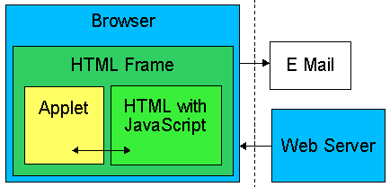

Using Hypersonic SQL, it is possible to create a Web Shop that resides on the client only. The web shop contains just simple static files. On the server side, just a simple plain web server is required. No CGI, no ASP, JSP, Servlets,... are required. This means it is possible to create a sophisticated Web Shop using just simple files and host it on a free site, with absolutely no cost.
Anyway, modern 3 tier architecture is used in this Web Shop; the difference is that the User Interface, the Business Logic and the Database are all running on the client side (inside the browser). This is how it works:

Inside the browser runs a Applet with the Business Logic tier (a simple Java Class) and the Database tier (the applet version of the Hypersonic SQL database). The applet is only about 45 KB. The user interface is inside the HTML page (or multiple pages, if the Applet runs in an own frame), and 'talks' to the Applet using JavaScript. After the user filled his shopping cart, he sends the order using an e-mail (or using a CGI that sends the mail as in the example Web Shop).
An example shop using this technology is available here:
http://www.hangloose.net/chaos
(To enter the shop, click the first cloud, just left of 'Den Shop betreten...')
Sorry, this site is currently only available in German. The shop resides in Switzerland, and the owner will not send items abroad.
This demo uses the standalone and in-memory mode. This means after the program is exited, all data is lost. There is also a persistent mode where the data is stored on disk and a client/server version.
How to use the applet
Command: Edit the current SQL command here
Execute: Run the current SQL command
Recent: This is a list of pre-defined and past SQL statements
Script: Make a script for the database